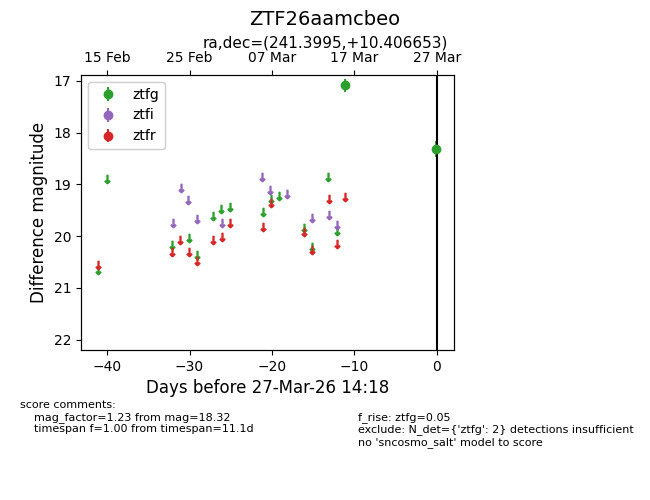
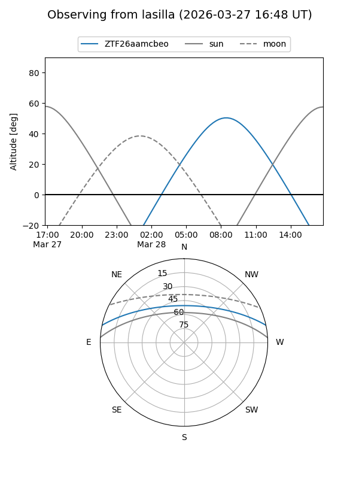
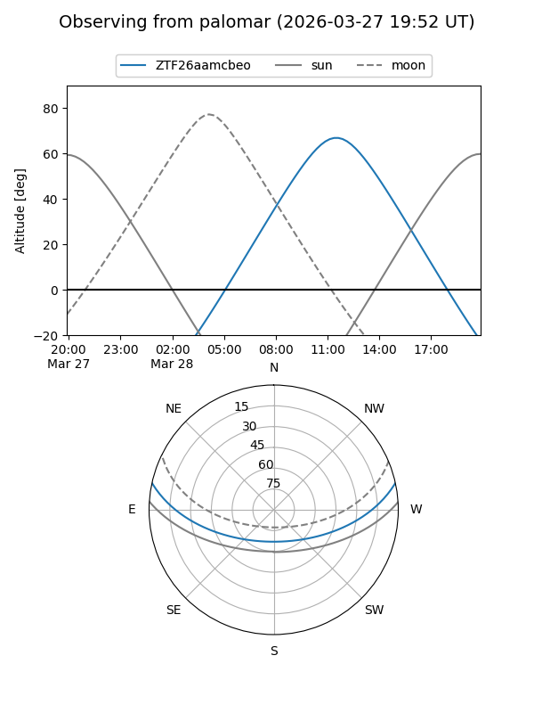

ZTF26aamcbeo
Target ZTF26aamcbeo at 2026-03-27 14:20
Aliases and brokers:
FINK: link
Lasair: link
ALeRCE: link
alt names
ZTF26aamcbeo (ztf,fink_ztf)
Coordinates:
equatorial (ra, dec) = 241.3995,+10.40665
equatorial (HMS+DMS) = 16:05:35.88,+10:24:23.95
galactic (l, b) = (22.4646,+41.44731)
Flags:
Photometry:
last ztfg=18.32
2 ztfg detections
Lightcurve

Visibility


Additional plots